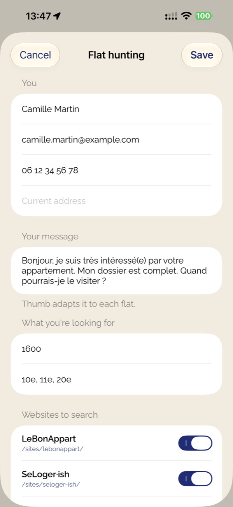
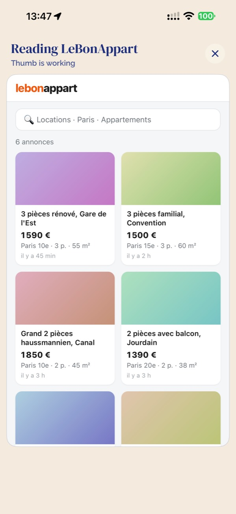
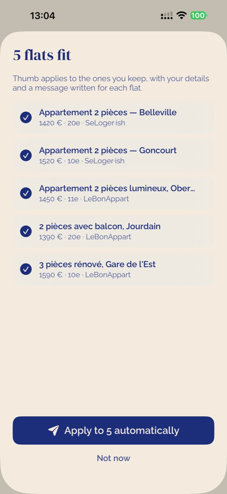
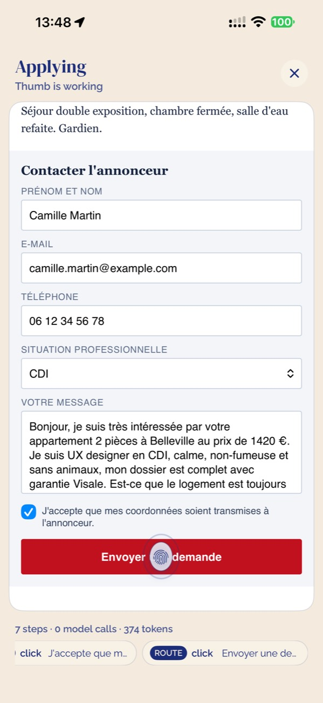
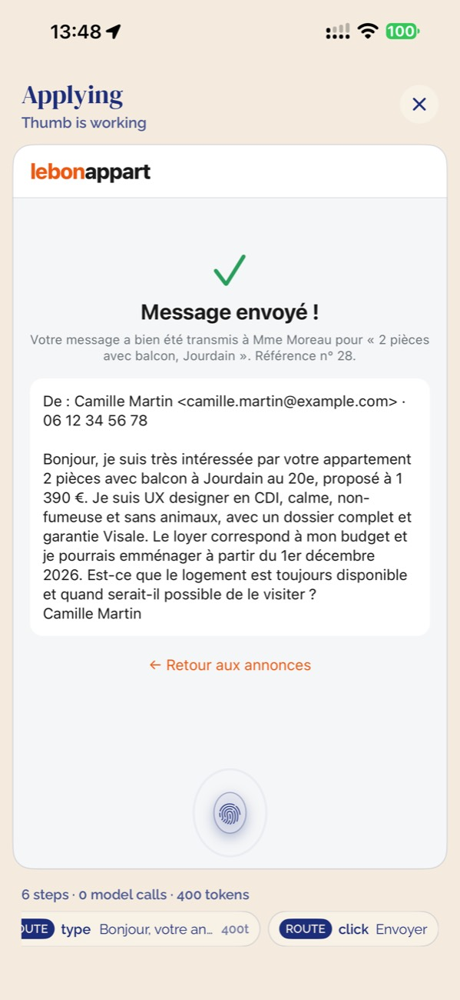
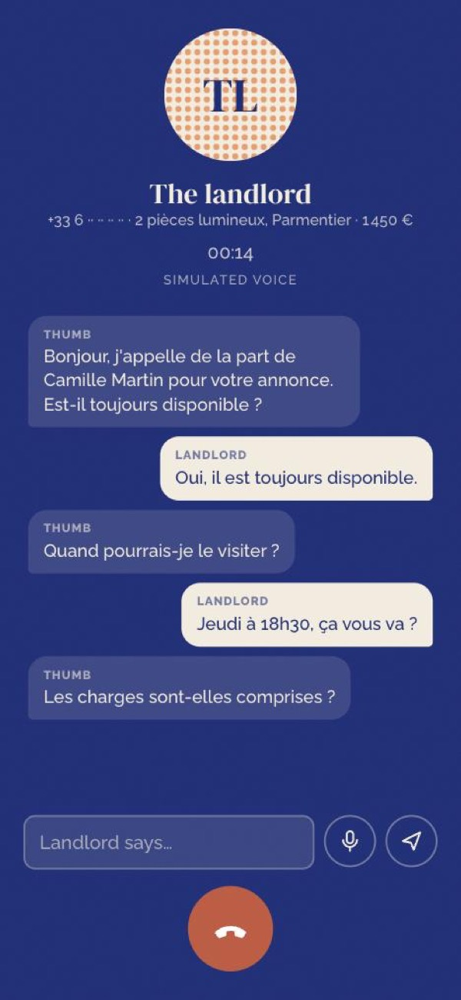
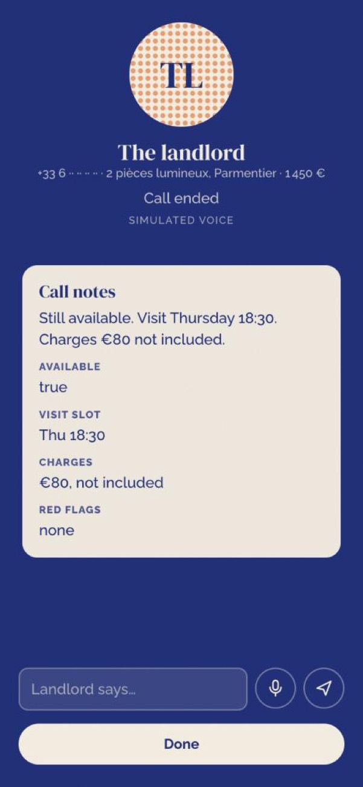

Teach Thumb
Do any task once in Thumb's browser. It records the steps, never passwords, and turns them into a tile it replays.
A recorded booking replayed in 37 ms, 0 model calls
Thumb taps through your web tasks while you sit on the train, learns each site, and makes the call when a website can't help.
Click through a workflow Flat hunting, start to finish, on real screens from the app.These are the app's own screens, recorded on an iPhone.
Home is a set of tasks. Teach Thumb sits first; flat hunting and appointments are examples. Anything you teach becomes a new tile.
Your details, the message you'd send, what you want and which websites to watch.

It opens every listing site in the phone's own browser and reads it the way you would. No API and no site-specific code.

Duplicates removed, every flat scored against your profile. One tap applies to all of them, once you approve.

The fingertip taps through each landlord's form: your details, a message written for that flat. A route chip means a step replayed from what Thumb already learned.

A flat is marked applied only when the site shows a confirmation.

When a listing only has a phone number, an ElevenLabs voice agent calls. It says up front that it is your AI assistant.

The answers to your questions go back into memory, next to the flat.

Do any task once in Thumb's browser. It records the steps, never passwords, and turns them into a tile it replays.
Reads every listing site, removes duplicates, scores each flat against your profile and applies to the ones you approve.
Says in one line whether a job fits, then fills the whole multi-step application.
Watches for the moment booking opens on an old club website and books a place.
A voice agent in your cloned voice says it is your AI assistant, asks your questions and files the answers.
When a site changes, the old route breaks. The model takes over only the changed steps, and the route is rewritten.
A run that ends on a real receipt becomes the route for that site. The next run replays it and asks the model only for what changes, like the message for each flat.
Each dot is one call to the model. Before the third run, the form was redesigned on purpose.
Drawn to scale: the area of each sun is the tokens it used.
Runs of 22 October 2026 with real gpt-5-mini calls on Aiven. 16 of 16 repeat applications were confirmed by a receipt on the page. The listing sites in the demo were built for it, with made-up people; runs on real sites were read-only or approved.
Thumb runs websites in its own browser, in your logged-in sessions. A script in every frame sends the page's text and every button, link and field. The model answers with one action, and Thumb sees what happened.
Click, type, select, navigate, scroll, extract, done or fail, chosen by a forced function call.
Anything that sends something waits for your approval, unless you trusted that task.
An application only counts when, after an approved send, the page reads as a confirmation.
Tap through a flat hunt on Thumb's real screens.
Click through a workflowBuilt by Gibril Bachouchi. More projects on askgib.com.